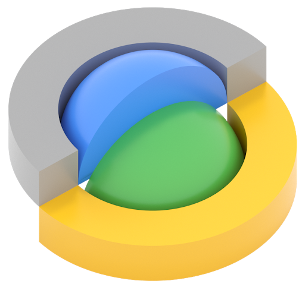

Open Vocabulary, Queryable Scene Representations for Real World Planning
- Boyuan Chen
- Fei Xia
- Brian Ichter
- Kanishka Rao
- Keerthana Gopalakrishnan
- Michael S. Ryoo
- Austin Stone
- Daniel Kappler
 Robotics at Google